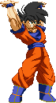
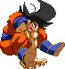

activate Hope Mode (LV2)
Activating the Hope Mode changes a few things in Goku's gameplay.
-Upon activation, an empty Hope Bar and a red kanji (which stands for 'hope') are added to the screen. The Hope Bar looks like it's split into two secions but is actually divided into three levels; blue = Lv1, white = Lv2 and flashing = Lv3 / Max. Even though it starts out in red, you'll already be at Lv1 upon activating the Mode. You reach Lv2 when you've past the halfway-mark of the Bar.
- Upon activating the Mode, you can keep holding the Medium punch + Medium kick buttons to keep charging and filling up the Hope Bar.
- Power Charging fills up his Hope Bar instead of his Power Bar.
- You are able to perform the Hope Charge when in mid-air, this makes him descend slower then usual.
- Goku gains access to the Spirit Bomb (detailed below).
- Kaioken costs Lv2 instead of Lv3 and cancels the Hope Mode.
- Depending if you're on Lv1, 2 or 3 of the Hope Bar, Goku will perform a unique and powerful Finisher at the end of the Kaioken.
-Upon activation, an empty Hope Bar and a red kanji (which stands for 'hope') are added to the screen. The Hope Bar looks like it's split into two secions but is actually divided into three levels; blue = Lv1, white = Lv2 and flashing = Lv3 / Max. Even though it starts out in red, you'll already be at Lv1 upon activating the Mode. You reach Lv2 when you've past the halfway-mark of the Bar.
- Upon activating the Mode, you can keep holding the Medium punch + Medium kick buttons to keep charging and filling up the Hope Bar.
- Power Charging fills up his Hope Bar instead of his Power Bar.
- You are able to perform the Hope Charge when in mid-air, this makes him descend slower then usual.
- Goku gains access to the Spirit Bomb (detailed below).
- Kaioken costs Lv2 instead of Lv3 and cancels the Hope Mode.
- Depending if you're on Lv1, 2 or 3 of the Hope Bar, Goku will perform a unique and powerful Finisher at the end of the Kaioken.

Spirit Bomb
Channeling all the collected energy from the Hope Bar,
Goku forms it into a sphere and launches it across the screen.
This blast changes depending on how far the Hope Bar was filled on the moment of launch.
Upon activating the Hope Mode, you can fire the Lv1 version.
This version fires a small sphere that deals ten hits and then explodes, knocking the opponent away.
Lv2 fires a slightly larger sphere that after dealing ten hits,
shoots upwards and carries the opponent into the air, dealing five hits.
Lv3 produces the largest sphere, is thrown with two hands and it deals 5 more hits compare to the Lv2 version
when the sphere rises into the air.
In the latest version of Goku, he's able to cancel the Hope Mode Activation into the Spirit Bomb, immediately throwing it. You can now also cancel a Lv1 Kamehameha (when it hits) into the Spirit Bomb.
In the latest version of Goku, he's able to cancel the Hope Mode Activation into the Spirit Bomb, immediately throwing it. You can now also cancel a Lv1 Kamehameha (when it hits) into the Spirit Bomb.